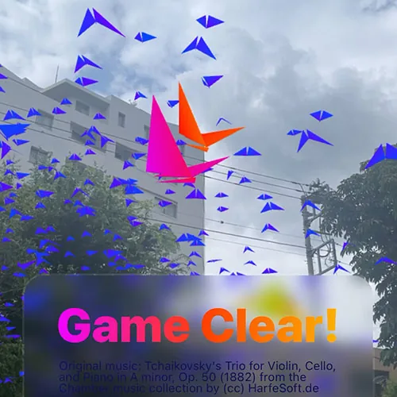
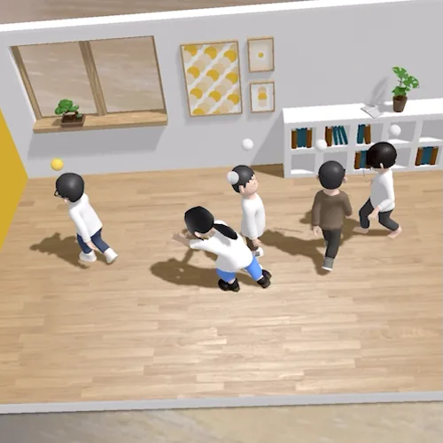
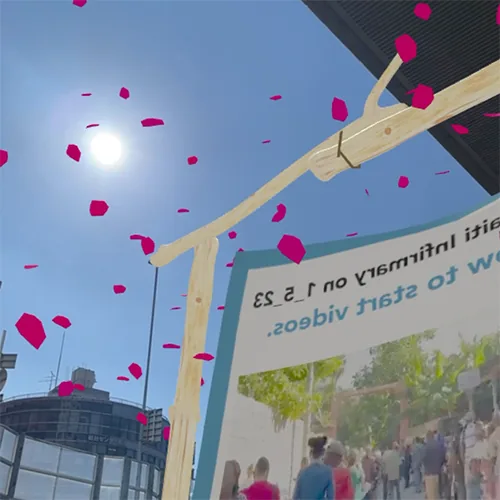
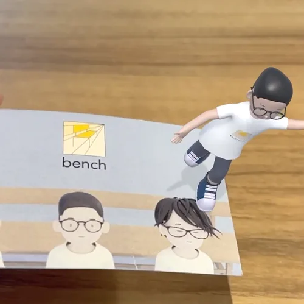
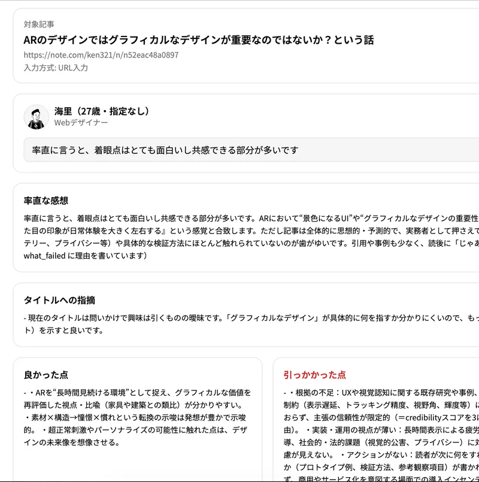

Bugs Symphony
音のする方へ。近づくと、虫が飛び立つ。
UI/UX Designer &
Amateur AR creator
普段はUI/UXのデザインをしています。アマチュアとしてARを制作する中で、画面の外に広がるUI/UXに思いを馳せるようになりました。
デジタルオブジェクトが現実の空間にあるとき、どんなUI/UXが可能になるのか。現実の物体と同じように、形や動きから使い方を感じ取れるのか。デジタルならではのアフォーダンスが生まれるのか。
そんな問いを、机を叩く、モノを傾ける、音のする方へ歩くといった小さな体験にして、作りながら、触りながら考えています。
I work in UI/UX design. Making AR projects as an amateur has led me to wonder about the possibilities for UI/UX beyond the screen.
What kinds of interactions become possible when digital objects inhabit physical space? Can their shape and movement suggest how to use them, as physical objects do? Might they offer affordances unique to the digital world?
I explore these questions through small experiences: tapping a table, tilting an object, or walking toward a sound. Making and trying them is how I think.
AIとの音声会話です。音声は会話と文字起こしのためOpenAIに送信されます。字幕は遅れたり、聞き間違えたりすることがあります。1回最大3分。
触れる時の手触り、聞こえる時の気配、その先につながるデジタル体験を。

音のする方へ。近づくと、虫が飛び立つ。

スマホそのものが、ラケットになる。

机をトントン、二人で遊ぶWeb AR紙相撲。

見上げた空を、ゲームの舞台に。

離れた友人が、小さなアバターでそばにいる。

歩いて読み進める、ハイチの物語。

傾ける、弾ませる。名刺が操作の道具になる。

公開する前に、別の視点で読んでもらう。